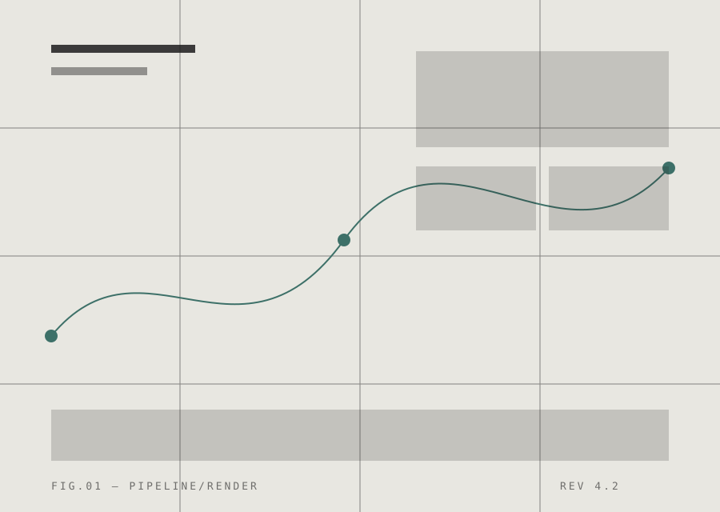

Design on reality, not mockups
An editorial, grid-disciplined interface system for teams who treat structure as a design material. Type, line, and proportion — nothing decorative, everything intentional.
We believe interface design is an editorial discipline. Every line is a decision, every margin a sentence, and the grid is the page on which the product writes itself.
Capture the surface
Point the system at any live screen. It reads the real DOM, the real type, the real spacing — not a flattened export.
Restructure the grid
A four-column editorial guide is laid over the capture. Elements snap to the structure and inherit hairline borders instead of shadows.
Ship the system
Export tokens, type scales and components as a self-contained kit. Solid fills, 1px rules, no clinical white — ready for production.

Product teams
Translate ambiguous Figma files into structured, grid-true builds. Stakeholders review on the real surface — fewer mockups, fewer surprises.
Request Access
We onboard a small cohort each month. Tell us about your surface and we'll be in touch.